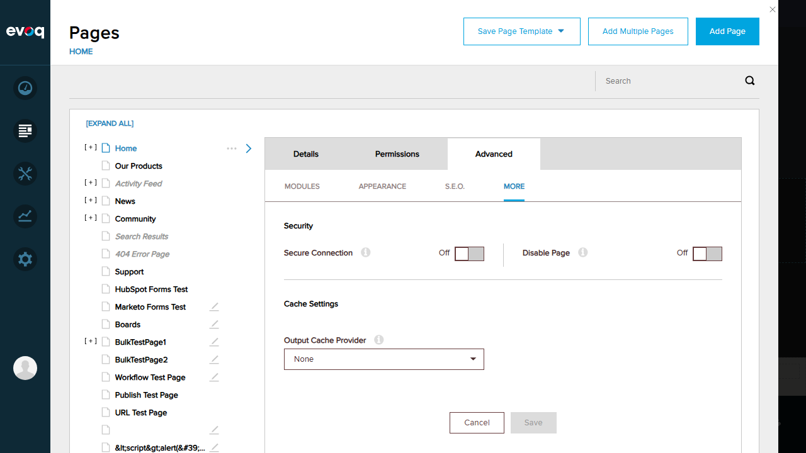
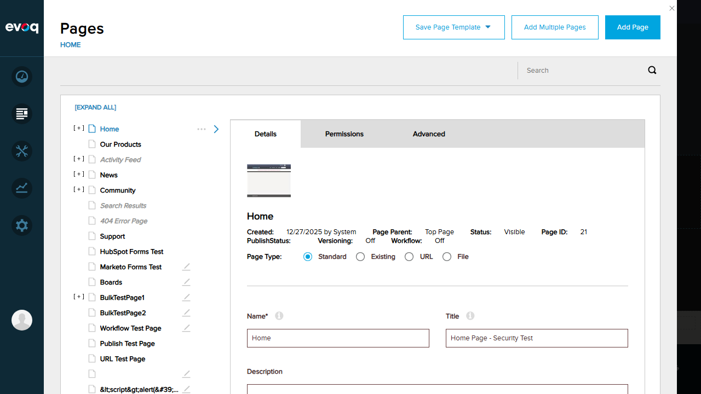
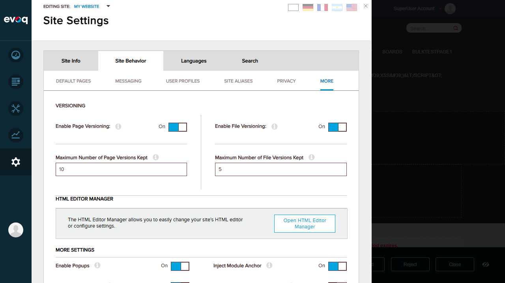

Description: Navigate to Module Actions > Edit Content > Version History to view the list of content versions.
Steps Taken:
Logged in as SuperUser (host/Pass123456)
Navigated to Home page in Edit mode
Clicked on HTML module's "Click here to edit content"
Clicked "Advanced Editor" button to open full editor dialog
Searched for Version History tab in the Edit Content dialog
Checked Content > Pages > Advanced settings for version history
Examined Module Settings dialog for version history option
Issues Found:
The documented UI path "Module Actions > Edit Content > Version History" was not found. The Edit Content dialog shows only "Current Content" and optionally "Master Content" tabs, but no "Version History" tab is visible.
Screenshot - Edit Content Dialog (No Version History Tab):

Test 2: Compare two versions side-by-side FAIL
Description: Select two versions and compare them side-by-side to see differences.
Steps Taken:
Searched for version comparison UI in Edit Content dialog
Checked Page Details for version comparison options
Reviewed code in VersionController.cs for comparison functionality
Issues Found:
No UI was found for comparing versions side-by-side. The VersionController.cs code shows methods for GetVersion() but no comparison UI is exposed in the tested interface.
Test 3: Rollback to previous version FAIL
Description: Select a previous version and rollback the content to that version.
Steps Taken:
Searched for rollback UI in Edit Content dialog
Found "Discard" button at bottom of page in Edit mode
Verified VersionController.cs has RollBackVersion() method
Issues Found:
While the code contains RollBackVersion() functionality in VersionController.cs:113, no dedicated rollback UI was found. The "Discard" button discards unpublished changes but doesn't provide selective version rollback.
Test 4: Delete specific version FAIL
Description: Delete a specific version from the version history.
Steps Taken:
Searched for version deletion UI
Verified VersionController.cs has DeleteVersion() method at line 47
Issues Found:
No UI for deleting specific versions was found. The DeleteVersion() method exists in the code but is not exposed through the UI.
Test 5: View version metadata (author, date) FAIL
Description: View metadata for each version including author and creation date.
Steps Taken:
Searched for version metadata display in Edit Content dialog
Checked HtmlTextLogInfo.cs for metadata fields: CreatedByUserID, DisplayName, CreatedOnDate
Issues Found:
The data model (HtmlTextLogInfo.cs) contains version metadata fields (CreatedByUserID, DisplayName, CreatedOnDate, StateName, Comment), but no UI was found to display this information.
Screenshot - Page Details showing creation info (but not version history):

Test 6: Set maximum version history limit PASS
Description: Configure the maximum number of versions to keep in history.
Steps Taken:
Navigated to Settings (Persona Bar)
Clicked on Site Settings
Selected Site Behavior tab
Clicked on More sub-tab
Found Versioning section with configuration options
Result: Successfully located the version history limit settings:
Enable Page Versioning: ON
Maximum Number of Page Versions Kept: 10
Enable File Versioning: ON
Maximum Number of File Versions Kept: 5
Screenshot - Site Versioning Settings:

Test 7: Auto-cleanup old versions FAIL
Description: Verify that old versions are automatically cleaned up when the limit is reached.
Steps Taken:
Reviewed VersionController.cs code for auto-cleanup logic
Found AddHtmlText() method passes MaxNumberOfVersions to DataProvider
Could not directly test cleanup as no version history UI was accessible
Issues Found:
The code at VersionController.cs:185 shows TabVersionSettings.Instance.GetMaxNumberOfVersions() is passed during AddHtmlText(), suggesting auto-cleanup exists. However, without access to the version history UI, this could not be directly verified through the UI.
Test 8: Publish specific version FAIL
Description: Select and publish a specific version from the history.
Steps Taken:
Found "Publish" button at bottom of page in Edit mode
Verified VersionController.cs has PublishVersion() method at line 59
Searched for UI to publish specific historical versions
Issues Found:
The "Publish" button only publishes the current draft version. No UI was found to select and publish a specific historical version. The PublishVersion() method exists in code but is not exposed for historical version selection.
Screenshot - Edit Mode with Discard/Publish buttons:
Observations
Code Analysis Findings
The following version management capabilities exist in the codebase but were not accessible through the UI:
VersionController.cs - Contains full CRUD operations for versions:
GetPublishedVersion() - Get current published version
GetLatestVersion() - Get most recent version
GetVersion() - Get specific version by ID
DeleteVersion() - Delete a specific version
PublishVersion() - Publish a specific version
RollBackVersion() - Rollback to a previous version
AddVersion() - Create new version
UpdateVersion() - Update existing version
HtmlTextLogController.cs - Manages version log history with:
GetHtmlTextLog() - Retrieve log entries for an item
AddHtmlTextLog() - Add new log entry
HtmlTextLogInfo.cs - Data model with fields: ItemID, StateID, StateName, Comment, Approved, CreatedByUserID, DisplayName, CreatedOnDate
EditHtml.ascx - Edit dialog shows "currentContent" tab and optional "masterContent" tab, but no "Version History" tab
UI Findings
Site-level versioning is properly configured (Page Versioning ON, max 10 versions)
Individual pages show "Versioning: Off" status despite site-level settings being ON
Edit mode provides "Discard" and "Publish" buttons for basic version control
No dedicated "Version History" tab or panel was found in the Edit Content dialog
Module Actions menu shows options like Settings, Export/Import, Help, Develop, Delete, Refresh - but no Version History
Potential Causes
The Version History UI may require specific page workflow configuration to be enabled
The feature may be available in a different Evoq product edition
The documented UI path may be outdated or refer to a different module version
Additional configuration or permissions may be required to expose the Version History UI
Conclusion
The Version History Management feature has robust backend implementation in the codebase (VersionController.cs, HtmlTextLogController.cs), but the expected UI at "Module Actions > Edit Content > Version History" was not found during testing. The only accessible version-related functionality is:
Site Settings > Site Behavior > More > Versioning - Configure maximum version limits (PASS)
Edit Mode Discard/Publish buttons - Basic draft/publish workflow (available but not version history)
Further investigation is recommended to determine if additional configuration, licensing, or permissions are required to enable the full Version History UI.